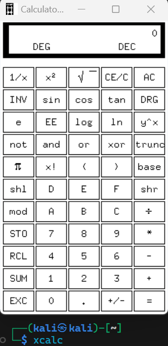

使用服务器上的GUI应用：X11 Forwarding#
这篇文章假设你有GNU/Linux和SSH的基础知识，因此不会详细地介绍每个细节。
考虑这样的场景：
- 在虚拟机上进行开发，操作GUI时，需要借助虚拟机自带的显示器；
- 有时不需要完整的桌面环境，打开一个窗口足矣；
这时候X11 Forwarding就十分有用了，它允许你在你的桌面环境中直接和虚拟机的GUI交互。
由于X是基于网络的窗口系统，你也可以和远在天边的VPS进行GUI交互（当然会有延迟）。
安装X Server#
我个人建议使用VcXsrv。
你也可以通过执行
winget install marha.VcXsrv来安装。
在开始菜单中运行XLaunch，一路下一步即可。你可以点击托盘图标/Applications/xcalc来启动自带的计算器应用，并验证显示和点击等操作。
配置SSH Server#
确保你的/etc/ssh/sshd_config文件中有下面的内容：
X11Forwarding yes
X11DisplayOffset 10
X11UseLocalhost no
如果你明白上面的设置是什么意思，你大可以自行修改ㄟ( ▔, ▔ )ㄏ
配置SSH Client#
仅就X11 Forwarding而言，几种配置过程从易到难排序，分别是Putty、OpenSSH for Windows和Visual Studio Code - Remote SSH。
无论哪种配置方式，你都需要先配置一个环境变量DISPLAY。我推荐你直接设置一个永久变量：
setx DISPLAY "127.0.0.1:0.0"
PuTTY#
用PuTTY配置X11 Forwarding最简单。在/Connection/SSH/X11设置中选择Enable X11 forwarding即可。
OpenSSH for Windows#
可以通过winget安装OpenSSH：
winget install Microsoft.OpenSSH.Beta
运行ssh -V测试安装是否正常，应该能得到类似下面的输出：
OpenSSH_for_Windows_9.5p1, LibreSSL 3.8.2
你可以通过命令直接连接：
ssh -X -Y [username@]<yourhost>
有些平台
-X可以省略，有些不可以。
也可以配置用户目录下.ssh/config文件：
Host AnyNameYouLike
HostName IP_or_Domain_Name
User username
ForwardX11 yes
ForwardX11Trusted yes
有些平台
ForwardX11可以省略，有些不可以。
Visual Studio Code - Remote SSH#
先安装Remote Development扩展包，再安装Remote X11 (SSH)扩展（也可能不需要）。
Remote - SSH扩展可能不会自动帮你设置远程主机上的DISPLAY环境变量，因此你可能需要这个扩展。
勾选Remote.SSH: Enable X11 Forwarding，然后按你以往在VS Code上SSH的习惯继续即可。
在远程主机上执行xcalc，如果一切顺利，你的桌面应该会弹出一个类似这样的窗口：
